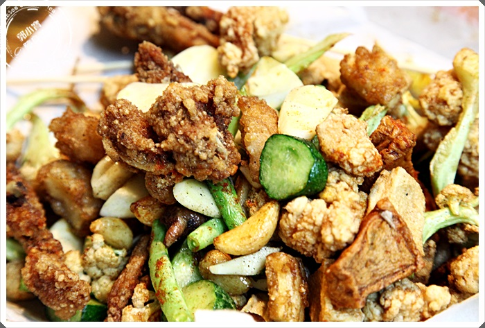

鹽酥雞
雞排跟鹽酥雞一直都是台灣美食愛好者終極追求目標，不管是看電影還是在家吃宵夜，都是必備的好夥伴，這次整理了10幾家網路上人氣雞排、鹽酥雞來跟大家分享一下。，
其實這次雞排總整理文我在網路上找了很久的資料，加上自己本身也相當的喜歡吃炸物，
所以也自己選了幾家，本來想一口氣推薦個１０幾家，後來發現很多網友推薦的鹽酥雞會是雞排攤都已經關門或是沒有營業了，所以目前我只能先分享到六家。。
第一家就跟大家分享一下最受好評的老爹鹽酥雞，沒辦法電話預約，等候的時間大約都是一個小時以上，不過星期日去的時候排隊機率比較小，。，

壽司
歐姆蛋
鹽水雞
心得